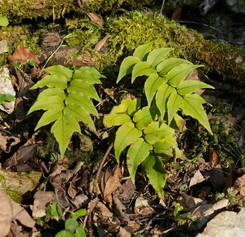

蕨类与裸子植物 · 植物界
贯众 Cyrtomium fortunei

贯众的羽状叶片整齐排列，叶柄基部密生棕色鳞片，根状茎可入药，是常见的药用蕨类与耐阴观叶植物。
- 分类
- 门蕨类植物门纲水龙骨纲目水龙骨目科鳞毛蕨科属贯众属
- 栖息环境
- 林下、溪边阴湿石缝与灌丛，喜温暖湿润半阴环境
- 地理分布
- 中国长江以南及华北部分地区，东亚多地也有分布
- 保护级别
- 暂无评估；野生与栽培种群常见
物种志
贯众是鳞毛蕨科的多年生蕨类，株高 30–70 cm。根状茎粗壮直立，密生棕色披针形鳞片；叶簇生，叶柄棕褐色、有光泽，基部密被鳞片。叶片为一回羽状复叶，羽片镰刀状披针形，边缘有锯齿，表面深绿色而有光泽，叶背色浅，叶脉网状。孢子囊群圆形，散布于叶背，囊群盖盾形。
贯众喜温暖湿润和半阴环境，多生于林下、溪边、阴湿石缝与灌木丛中，耐寒性较强。它靠孢子繁殖，也可分株，栽培时要求土壤疏松透气、排水良好，是优良的耐阴观叶植物。贯众的根状茎在中药里称“贯众”，有清热解毒、凉血止血之效，但不同地区作“贯众”入药的蕨类不止一种，使用时应辨明种类。它在东亚广泛分布，中国长江以南常见。
形态与习性
- 株高30–70 cm
- 叶一回羽状复叶，羽片镰刀形
- 叶柄棕褐色，基部密生棕色鳞片
- 孢子囊群圆形，具盾形囊群盖
- 药用根状茎入药称“贯众”
- 习性耐阴喜湿，适合林下栽培
趣味知识
- 贯众的叶柄基部密生棕色鳞片，摸起来像披了一层毛。
- 中药材“贯众”来源不止一种蕨类，不同产地可能使用不同物种。
- 它耐阴好养，常被盆栽观赏，也是溪石盆景的配植材料。